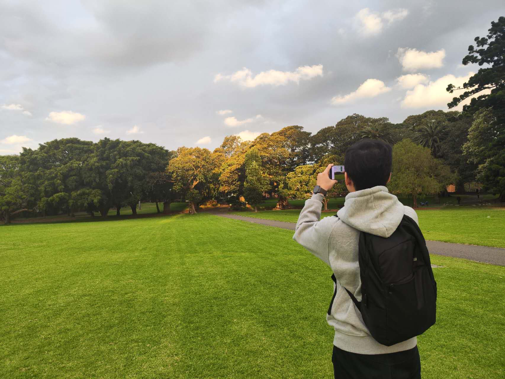

Xiao Cheng
I am a second-year PhD student at School of Computer Science, Faculty of Engineering and Information Technology, University of Technology Sydney (UTS), where I was advised by Prof. Yulei Sui. My research interests include static analysis, verification, and programming languages processing.
Email / CV / Google Scholar / Github
News
Publications
I'm interested in devleoping fundamental static analysis and verification techniques to improve the reliability and security of modern software systems.
- CCF-A Path-Sensitive Code Embedding via Contrastive Learning for Software Vulnerability Detection
Xiao Cheng, Guanqin Zhang, Haoyu Wang and Yulei Sui
The 31st ACM SIGSOFT International Symposium on Software Testing and Analysis (ISSTA '22) PDF Code - CCF-A DeepWukong: Statically Detecting Software Vulnerabilities using Deep Graph Neural Network
Xiao Cheng, Haoyu Wang, Jiayi Hua, Guoai Xu and Yulei Sui
ACM Transactions on Software Engineering and Methodology (TOSEM) PDF Code - CCF-A ACM SIGPLAN Distinguished Paper AWARD Flow2Vec: Value-Flow-Based Precise Code Embedding
Yulei Sui, Xiao Cheng, Guanqin Zhang and Haoyu Wang
Proceedings of ACM OOPSLA 2020 PDF Code - CORE-A Static Detection of Control-Flow-Related Vulnerabilities Using Graph Embedding
Xiao Cheng, Haoyu Wang, Jiayi Hua, Miao Zhang, Guoai Xu, Li Yi and Yulei Sui
The 24th International Conference on Engineering of Complex Computer Systems (ICECCS 2019) PDF Code
Services
Teaching Experience
Awards
Welcome to use this website's source code, just add a link back to here. ✩
No.
Visitor Since July 2022. Powered by w3.css